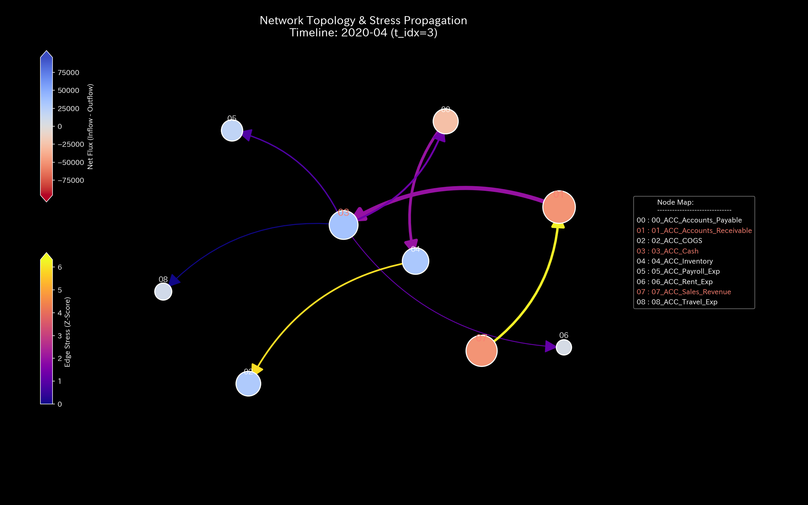

Tensor-Link Utility

An open analysis platform that models transaction data — double-entry ledgers, urban traffic, stock-market order books, fMRI brain-signal time series — as a mass-spring-damper network, and flags anomalies using quantities borrowed from classical mechanics, thermodynamics, and so forth: entropy (how spread out or concentrated the energy flow is), conservation residuals (whether what flows in matches what flows out), the spectral radius of the transition matrix (a measure of how strongly a cycle feeds back on itself), and an energy-like functional (a single number that rises when the system is under strain). The physical analogy is a modelling choice, not a claim that ledgers obey physical law. Validated so far on synthetic cases; work on real data is ongoing, and I am in discussion with researchers whose prior work overlaps with this.
It also ships a protocol that constrains an LLM to test its own false positives and false negatives before it reports anything.